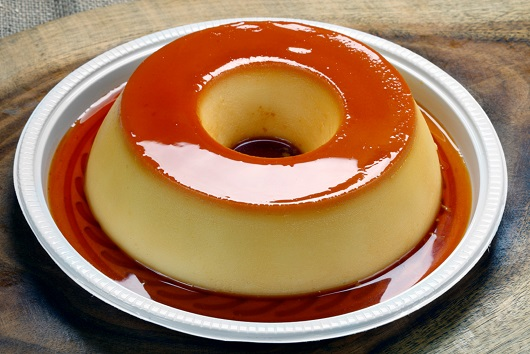

Receitas Variadas e deliciosa
Almôndegas

Ingredientes
- 500 g de carne moída azeite
- 2 colheres (sopa) de azeite de oliva (30 ml) cebola
- 1 xícara de cebola bem picada (60 g) ovo
- 1 ovo
- 150 g de farinha de rosca
- sal a gosto
- pimenta-do-reino a gosto
- 395 g de molho de tomate
Modo de Preparo
- Misture a carne com o ovo, a cebola, o sal, um pouco de azeite de oliva (ou óleo) e a pimenta.
- Agregue a farinha até dar o ponto de enrolar as almôndegas.
- Faça pequenas bolinhas.
- Em uma panela com um pouco de azeite, frite as almôndegas selando-as em fogo alto.
- Retire as almôndegas e reserve.
- Em outra panela, esquente o molho de tomate em fogo baixo.
- Na mesma panela da almôndega, elimine o excesso de azeite e coloque o molho de tomate, colocando as almôndegas para cozinhar por alguns minutos.
- Em cerca de 15 minutos as almôndegas estarão totalmente cozidas e o prato estará pronto.
Fricassê de frango

Ingredientes
- 1 lata de creme de leite
- 1 lata de milho verde
- 1 copo de requeijão cremoso
- 100 g de azeitona sem caroço
- 2 peitos de frango desfiados
- 200 g de mussarela fatiada
- 100 g de batata palha
- 1 xícara de água
- 1 pitada de sal
Modo de Preparo
- Bata no liquidificador o milho, o requeijão, o creme de leite e a água.
- Refogue o creme do liquidificador com o frango desfiado, as azeitonas e o sal até ficar com uma textura espessa.
- Coloque o refogado numa assadeira, cubra com mussarela e espalhe a batata palha por cima.
- Leve ao forno até borbulhar.
- Sirva com arroz branco.
Bobó de Camarão

Ingredientes
- 1 kg de camarão fresco
- sal
- 3 dentes de alho picados e amassados
- suco de 1 limão
- pimenta-do-reino
- 1 kg de mandioca (prefira as que já vem embaladas e descascadas, é mais prático)
- 3 cebolas (1 cortada em rodelas e 2 raladas)
- 6 colheres (sopa) de azeite de oliva
- 2 vidros de leite de coco
- 1 maço de cheiro-verde picado
- 2 latas de molho pronto de tomate
- 2 pimentões verdes bem picadinhos
- 2 colheres (sopa) de azeite de dendê
Modo de Preparo
- Lave os camarões e tempere com sal, alho, pimenta e limão, deixe marinar.
- Pegue uma panela com água e cozinhe a mandioca em pedacinhos, com louro e a cebola em rodelas.
- Quando estiver mole, acrescente um vidro de leite de coco.
- Deixe esfriar um pouco e bata no liquidificador.
- Esquente o azeite de oliva, junte a cebola ralada e deixe dourar.
- Acrescente os camarões e frite.
- Adicione as 2 latas de pomarola, o cheiro-verde, o pimentão e deixe cozinhar por alguns minutos.
- Junte na mesma panela, a mandioca batida no liquidificador, outro vidro de leite de coco e o azeite de dendê.
- Deixe levantar fervura e está pronto.
Massa de paqueca

Ingredientes
- 2 xícaras (chá) de farinha de trigo
- 2 xícaras (chá) de leite
- 3 ovos
- 1 pitada de sal
Modo de Preparo
- Bata todos os ingredientes no liquidificador por 2 minutos.
- Em seguida desligue e, com uma colher, misture a farinha que grudou no copo do liquidificador.
- Bata novamente só para misturar e reserve.
- Unte a frigideira com um fio de óleo e leve ao fogo até aquecer.
- Com o auxílio de uma concha, pegue uma porção de massa e coloque na frigideira, gire a frigideira para espalhar bem a massa.
- Abaixe o fogo e deixe dourar por baixo, em seguida vire do outro lado e deixe dourar, repita o processo com toda a massa.
Pudim de Leite Condesado

Como preparar
Ingredientes
- 1 lata de leite condensado
- 1 lata de leite (medida da lata de leite condensado)
- 3 ovos inteiros
- 1 xícara (chá) de açúcar
- 1/2 xícara de água
Pudim
Calda
Modo de Preparo
- Primeiro, bata bem os ovos no liquidificador.
- Acrescente o leite condensado e o leite, e bata novamente.
- Derreta o açúcar na panela até ficar moreno, acrescente a água e deixe engrossar.
- Coloque em uma forma redonda e despeje a massa do pudim por cima.
- Asse em forno médio por 45 minutos, com a assadeira redonda dentro de uma maior com água.
- Espete um garfo para ver se está bem assado.
- Deixe esfriar e desenforme.
pudim
Calda
Bolinho de Chuva
Ingredientes
- 2 ovos
- 1 xícara de açúcar
- 1 xícara (chá) de leite
- 2 e 1/2 xícaras de farinha de trigo
- 1 colher (sopa) de fermento em pó
- 3 colheres (sopa) de açúcar para polvilhar
- 1 colher (sopa) de canela para polvilhar
- 1 litro de óleo para fritar
Modo de Preparo
- Misture todos os ingredientes até obter uma massa cremosa e homogênea.
- Deixe aquecer uma panela com bastante óleo para que os bolinhos possam boiar.
- Quando o óleo estiver bem quente (180º C), com uma colher, comece a colocar pequenas quantidades de massa, e frite até que dourem por inteiro.
- Coloque os bolinhos sobre papel absorvente e depois passe-os no açúcar com canela.